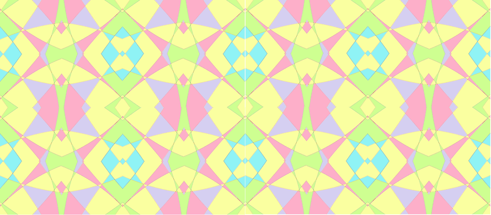

Jayla Nickens / June 27th, 2021
The video below shares a road map and summary on web development and web design for beginners. I found this video very helpful because it explained the basics of web development through clear visuals and understandable references. It helped me get a clear sense of what I am doing in IT Girls’ web development Labs. Enjoy!
Jayla Nickens / July 20th, 2021
This is not actually the first day of IT Girls. The first day was introductions and a review of the Syllabus, but July 20th is when the fun starts. We met and learned from Lauren Hardee-Chase, an expert in cryptology. She went over a brief history of cryptology, women in cryptology, types of cryptography methods, and taught us how to encode and decode encrypted messages using the standard Ceasarian Cipher. I truly enjoyed the session with her and the lab. I learned something new and something to share with my friends who are not a part of IT Girls.
Jayla Nickes / July, 22nd
This lesson has opened my eyes to how computers, entertainment applications, and even cars can memorize your movements from data. Then, recommend games, tv-shows, and places you might like. For example, when YouTube recommends videos for me to watch it’s either content from people I’m subscribed to or a video that is similar to an art tutorial I searched up yesterday. Most of the time the recommendations are something I like, but there are very few times when I find the suggested content uninteresting. For this lession we tested machine learning abilities by training a computer to recognize your images, sounds, or poses using Teachable Machine. I decided to see if the computer can differentiate me and my sister's voices by uploading separate audio of us speaking and one sample of the background noises. The results were not as accurate as I wanted them to be, but I think more audio samples of our voices and a sample of all potential background noises would help improve the results. I highly recommend anyone interested in machine learning to play around with the website tools to learn more about training artificial intelligence.
Jayla Nickens / July 30th
The Game Challenge was very fun. We were divided into groups to design a game based on a scenario of the given audience and the goal for the players. With inspiration from Roblox, my group created the game ONECRW for visitors of the new One Climate, One Planet exhibit in the Strong National History of Play Museum and our goal was to help them understand the impacts of climate change. To meet the criteria, we designed an online, decision-making, character building game that involved missions and different map locations relating to climate change issues in the real world. Our game's connection to the real world and problem solving challenges are to help the player develop skills on how to improve the environment and learn about the effects of climate change, so they can implement them in the real world.
Jayla Nickens / August 5th
This was the last session for 2021 IT Girls. Our instructor, Laurie Ferger, enlightened us on how math and technology is used in fashion and showed us how we can use graph equations to create a repeated pattern. In this activity we used Desmos Graphing Calculator to graph a design to screenshot with a Snipping Tool, then color using a painting tool on our computer. Then, in the Paint app we rotated, reflected, and pasted our sample design multiple times. Below are my creations.
 .png)